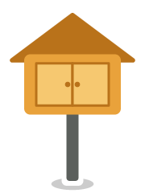
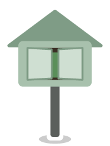

For approval before building. Dashed orange outlines mark what's new or changed since the first walk mockup. Library names are real Adelaide libraries; numbers are examples. Walk screens use the simplified map drawing.
One round menu button. Centre on me only appears (above the bottom card) when the map isn't already centred on you; here it is, so it's hidden. When "To visit" is on, a pill at the top says "To visit only · Show all".


Tapping it slides open a column of pills: short words, with the icons on the right so they line up under the button. To visit is a switch (on: amber, with the switch showing). ? needs no words. Tap one, the ✕, or the map to close.
After panning away from you, Centre on me appears as a pill just above the bottom card. Tapping it moves the map back to you and the pill goes away again.
Choose the order and where to finish. Until the real footpath route arrives (or offline), the distance is a range worked out from straight lines, and says so.
Once Mapbox answers: the real footpath distance, walking time plus time at the libraries (about 5 min each), and a reminder for long walks (over 5 km or 90 min). "As I go" is explained on the card.
A fourth button in a library's details: Walk from here. The walk starts and finishes at that library (handy if you park there), it's ticked as the first stop, and the list is sorted around it.
The planner always says where the walk starts and finishes, with Change. Opened from a library, it starts there; from the menu, it starts from you, or from the middle of the map if you've moved the map away from yourself.
Three plain choices. Middle of the map plans around whatever you're looking at (pan there first). A library lets you tap one on the map or search the list.
If you've moved the map away from yourself, Nearby lists libraries around the middle of the map instead, and says so, with Near me to switch back.
"Start walking" keeps you in Novel Route. The map follows you; the card shows the next stop, a compass arrow, the straight-line distance (labelled) and the footpath distance. Google Maps is a small button for turn-by-turn.
Within about 30 m: "You're here", I visited and Skip. With "As I go", the next stop is chosen after this one (the shortest way through the rest and back to your start), so wandering off isn't "going wrong".
When every stop is visited or skipped: a short wrap-up with your streak. Done clears it. Skipped stops stay "to visit". The walk survives the app being closed until then.
| Now | Proposed |
|---|---|
| Log visit | I visited |
| Due · Due for a visit only | To visit · To visit only |
| Libraries near you (list) | Nearby (or "Around the map centre" when the map is moved away) |
| Show my location (button) | Centre on me |
| Cleared · Reach | Fully explored · Furthest out |
| Directions | Directions (opens Google Maps), said under the button in the detail panel |
| 390 m (straight line, unlabelled) | 390 m in a straight line, wherever a straight-line distance sits next to walking ones |